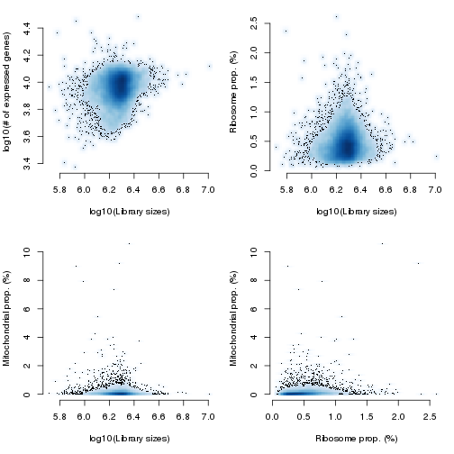
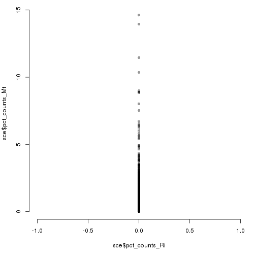
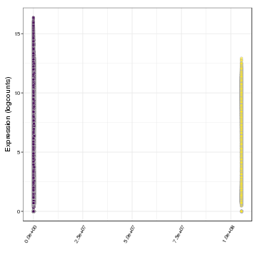
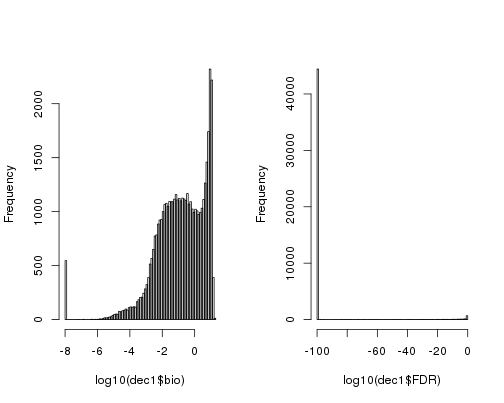
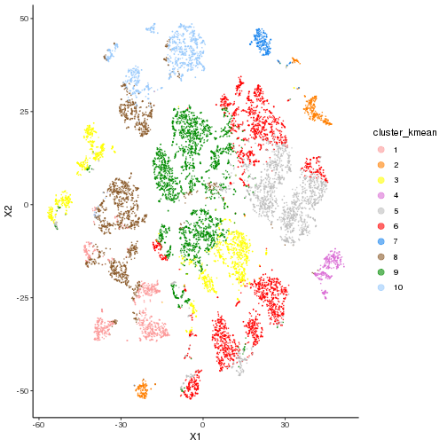
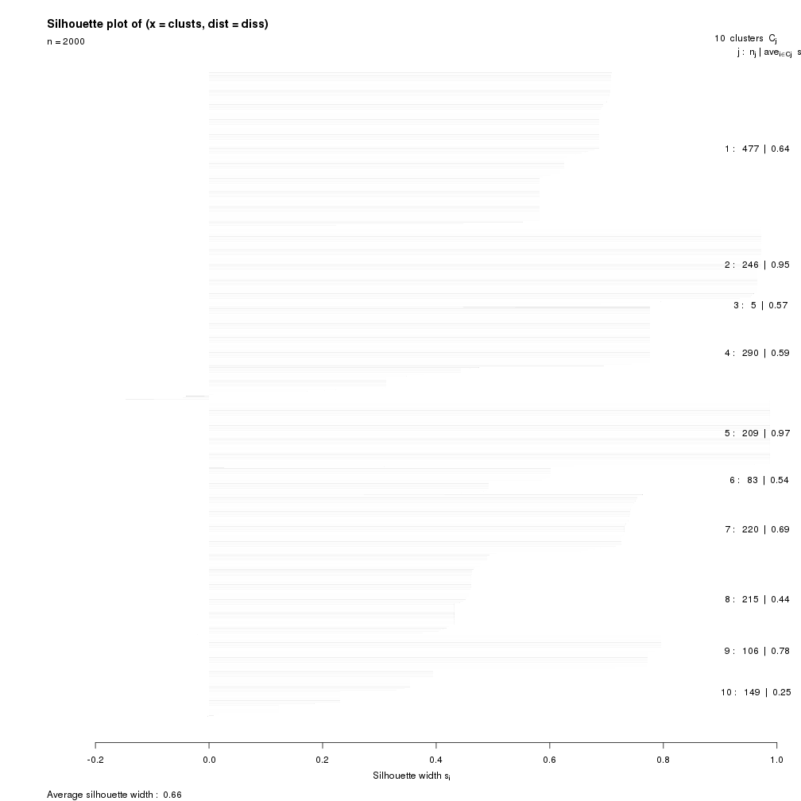

This markdown is for analyzing the Allen Brain Atlas MTG dataset. While some details of their analysis is provided here, we ran a workflow similar to the DroNc dataset.
The dataset is available here.
where_file = c("pllittle")[1]
if(where_file == "pllittle"){
src_dir = "/pine/scr/p/l/pllittle/CS_eQTL/s3_Real/scRNAseq_pipelines"
data_dir = file.path(src_dir,"MTG")
}
# Source/Libraries
source(file.path(src_dir,"SOURCE.R"))
# biocLite("BiocUpgrade")
bio_packs = c("SingleCellExperiment","DropletUtils","biomaRt","scater","scran","SC3")
if( !all(bio_packs %in% installed.packages()[,"Package"]) ){
source("https://bioconductor.org/biocLite.R")
biocLite(bio_packs,suppressUpdates = TRUE)
# biocLite("SC3",suppressUpdates = TRUE)
}
cran_packs = c("stringi","irlba")
if( !all(cran_packs %in% installed.packages()[,"Package"]) ){
install.packages(cran_packs)
}
# DropletUtils: provides functions for data from droplet technologies such as 10X Genomics
# biomaRt: provides easy access to databases, such as Ensembl, COSMIC, Uniprot, HGNC, etc.
# scater: collection of tools for doing quality control analyses of scRNA-seq
# scran: methods provide normalization of cell-specific biases, correcting batch effects, identify marker genes
suppressPackageStartupMessages(library(SingleCellExperiment))
suppressPackageStartupMessages(library(DropletUtils))
suppressPackageStartupMessages(library(biomaRt))
suppressPackageStartupMessages(library(scater))
suppressPackageStartupMessages(library(scran))
suppressPackageStartupMessages(library(limma))
# Import counts
counts_fn = file.path(data_dir,"image.rds")
if( !file.exists(counts_fn) ){
file_link = "http://celltypes.brain-map.org/api/v2/well_known_file_download/694416044"
file_name = strsplit(file_link,"/")[[1]]
file_name = file_name[length(file_name)]
file_name = file.path(data_dir,file_name)
if( !file.exists(file_name) ){
cmd = sprintf("cd %s; wget %s",data_dir,file_link)
system(cmd)
}
cmd = sprintf("cd %s; unzip -o %s",data_dir,file_name); system(cmd)
exons_fn = file.path(data_dir,"human_MTG_2018-06-14_exon-matrix.csv")
num_lines = as.numeric(system(sprintf("wc -l %s | cut -d ' ' -f1",exons_fn),intern = TRUE))
exon_counts = read.delim(exons_fn,sep = ',',header = TRUE,row.names = 1,check.names = FALSE,nrows = num_lines - 1)
introns_fn = file.path(data_dir,"human_MTG_2018-06-14_intron-matrix.csv")
num_lines = as.numeric(system(sprintf("wc -l %s | cut -d ' ' -f1",introns_fn),intern = TRUE))
intron_counts = read.delim(introns_fn,sep = ',',header = TRUE,row.names = 1,check.names = FALSE,nrows = num_lines - 1)
# Add exon and intron counts
counts = as.matrix(exon_counts) + as.matrix(intron_counts)
print(dim(counts))
saveRDS(counts,counts_fn)
saveRDS(exon_counts,file.path(data_dir,"exons.rds"))
}
counts = readRDS(counts_fn)
cell_data = read.table("human_MTG_2018-06-14_samples-columns.csv",sep=',',header=TRUE,stringsAsFactors=FALSE)
sce = SingleCellExperiment(assays = list(counts = as.matrix(counts)),colData = cell_data)
rm(counts,cell_data)
# Import gene info
rowData(sce) = read.table("human_MTG_2018-06-14_genes-rows.csv",sep=',',header=TRUE,stringsAsFactors=FALSE)
sce
## class: SingleCellExperiment
## dim: 50281 15928
## metadata(0):
## assays(1): counts
## rownames(50281): 353007 353008 ... 259265 150478
## rowData names(5): gene chromosome entrez_id gene_name
## mouse_homologenes
## colnames(15928): F1S4_160106_001_B01 F1S4_160106_001_C01 ...
## F2S4_170405_060_F01 F2S4_170405_060_H01
## colData names(34): sample_name sample_id ... class cluster
## reducedDimNames(0):
## spikeNames(0):
# Define spikes
rowData(sce)[grep("^ERCC",rowData(sce)$gene),]
## DataFrame with 10 rows and 5 columns
## gene chromosome entrez_id
## <character> <character> <integer>
## 1 ERCC1 19 2067
## 2 ERCC2 19 2068
## 3 ERCC3 2 2071
## 4 ERCC4 16 2072
## 5 ERCC5 13 2073
## 6 ERCC6 10 2074
## 7 ERCC6-PGBD3 10 101243544
## 8 ERCC6L X 54821
## 9 ERCC6L2 9 375748
## 10 ERCC8 5 1161
## gene_name mouse_homologenes
## <character> <character>
## 1 excision repair cross-complementation group 1 Ercc1
## 2 excision repair cross-complementation group 2 Ercc2
## 3 excision repair cross-complementation group 3 Ercc3
## 4 excision repair cross-complementation group 4 Ercc4
## 5 excision repair cross-complementation group 5 Ercc5
## 6 excision repair cross-complementation group 6 Ercc6
## 7 ERCC6-PGBD3 readthrough
## 8 excision repair cross-complementation group 6-like Ercc6l
## 9 excision repair cross-complementation group 6-like 2 Ercc6l2
## 10 excision repair cross-complementation group 8 Ercc8
# isSpike(sce,"ERCC") = grepl("^ERCC",rowData(sce)$gene)
Look here for reference.
date()
## [1] "Thu Oct 18 21:28:49 2018"
bcrank = barcodeRanks(counts(sce))
date()
## [1] "Thu Oct 18 21:28:54 2018"
# Only showing unique points for plotting speed.
uniq = !duplicated(bcrank$rank)
par(mar=c(5,4,2,1), bty="n")
plot(bcrank$rank[uniq], bcrank$total[uniq], log="xy",xlab="Rank", ylab="Total UMI count", cex=0.5, cex.lab=1.2)
abline(h=bcrank$inflection, col="darkgreen", lty=2)
abline(h=bcrank$knee, col="dodgerblue", lty=2)
legend("left", legend=c("Inflection", "Knee"), bty="n",col=c("darkgreen", "dodgerblue"), lty=2, cex=1.2)
par(mar=c(5,4,4,2)+0.1,bty="o")
bcrank$inflection
## F1S4_161026_023_E01
## 579270
bcrank$knee
## F1S4_160721_080_B01
## 1636847
summary(bcrank$total)
## Min. 1st Qu. Median Mean 3rd Qu. Max.
## 519344 1703851 1908969 1908554 2097906 10289574
table(bcrank$total >= bcrank$knee)
##
## FALSE TRUE
## 3034 12894
table(bcrank$total >= bcrank$inflection)
##
## FALSE TRUE
## 1 15927
set.seed(100)
date()
## [1] "Thu Oct 18 21:28:55 2018"
e_out = emptyDrops(counts(sce))
date()
## [1] "Thu Oct 18 22:51:22 2018"
e_out
## DataFrame with 15928 rows and 5 columns
## Total LogProb PValue Limited FDR
## <integer> <numeric> <numeric> <logical> <numeric>
## F1S4_160106_001_B01 1945567 NaN 1 FALSE 0
## F1S4_160106_001_C01 2076398 NaN 1 FALSE 0
## F1S4_160106_001_E01 1984845 NaN 1 FALSE 0
## F1S4_160106_001_G01 1991032 NaN 1 FALSE 0
## F1S4_160106_001_H01 2189892 NaN 1 FALSE 0
## ... ... ... ... ... ...
## F2S4_170405_060_B01 2315521 NaN 1 FALSE 0
## F2S4_170405_060_C01 2376631 NaN 1 FALSE 0
## F2S4_170405_060_E01 1761501 NaN 1 FALSE 0
## F2S4_170405_060_F01 1736137 NaN 1 FALSE 0
## F2S4_170405_060_H01 1987249 NaN 1 FALSE 0
is_cell = (e_out$FDR <= 0.01)
# Temp save image
post_eDrops_fn = file.path(data_dir,"post_eDrops.rds")
if(where_file == "pllittle"){
saveRDS(list(sce=sce,e_out=e_out,is_cell=is_cell),post_eDrops_fn)
} else if(FALSE){
rds = readRDS(post_eDrops_fn)
sce = rds$sce
e_out = rds$e_out
is_cell = rds$is_cell
rm(rds)
}
if( !all(is.na(e_out$LogProb)) ){
par(mar=c(5,4,1,1), mfrow=c(1,2), bty="n")
plot(e_out$Total, -e_out$LogProb, col=ifelse(is_cell, "red", "black"),
xlab="Total UMI count", ylab="-Log Probability", cex=0.2)
abline(v = bcrank$inflection, col="darkgreen")
abline(v = bcrank$knee, col="dodgerblue")
legend("bottomright", legend=c("Inflection", "Knee"), bty="n",
col=c("darkgreen", "dodgerblue"), lty=1, cex=1.2)
plot(e_out$Total, -e_out$LogProb, col=ifelse(is_cell, "red", "black"),
xlab="Total UMI count", ylab="-Log Probability", cex=0.2, xlim=c(0,2000), ylim=c(0,2000))
abline(v = bcrank$inflection, col="darkgreen")
abline(v = bcrank$knee, col="dodgerblue")
fi
## Error: <text>:17:0: unexpected end of input
## 15:
## 16: fi
## ^
From the above analysis, some cells with very small number of UMIs may also have small FDR suggesting the distribution of UMI counts are different from what is expected from ambient profile. We choose a more conservative strategy, to keep the cells with total number of UMI larger than the inflection point estimate (bcrank$inflection=bcrank$inflection) and FDR < 0.01.
table(colnames(sce) == rownames(e_out))
##
## TRUE
## 15928
table(e_out$FDR <= 0.01, useNA="ifany")
##
## FALSE TRUE
## 3034 12894
table(is_cell, e_out$Total >= bcrank$inflection)
##
## is_cell FALSE TRUE
## FALSE 1 3033
## TRUE 0 12894
# w2kp = which(is_cell & e_out$Total >= bcrank$inflection)
# sce = sce[,w2kp]
# dim(sce)
Next step we apply more QC based on a set of features per cell. We will look at ribosomal genes. The imported file can be found here.
file_link = "https://www.genenames.org/cgi-bin/genefamilies/set/1054/download/branch"
file_name = strsplit(file_link,"/")[[1]]
file_name = file_name[length(file_name)]
ribo_fn = file.path(data_dir,file_name)
if( !file.exists(ribo_fn) ){
cmd = sprintf("cd %s; wget %s",data_dir,file_link)
print(cmd)
system(cmd)
}
ribo = read.table(ribo_fn,sep='\t',header=TRUE,stringsAsFactors = FALSE)
dim(ribo)
## [1] 164 12
ribo[1:2,]
## HGNC.ID Approved.Symbol Approved.Name Status Previous.Symbols
## 1 10298 RPL10 ribosomal protein L10 Approved
## 2 10299 RPL10A ribosomal protein L10a Approved NEDD6
## Synonyms Chromosome Accession.Numbers
## 1 NOV, QM, DXS648E, DXS648, FLJ23544, L10 Xq28 AB007170
## 2 Csa-19, L10A 6p21.31 U12404
## RefSeq.IDs Gene.Family.Tag Gene.family.description Gene.family.ID
## 1 NM_006013 RPL L ribosomal proteins 729
## 2 NM_007104 RPL L ribosomal proteins 729
# Temp save image
post_ribo_download_fn = file.path(data_dir,"post_ribo_download.rds")
if(where_file == "pllittle"){
saveRDS(list(sce=sce,ribo=ribo),post_ribo_download_fn)
} else if(FALSE){
rds = readRDS(post_ribo_download_fn)
sce = rds$sce
ribo = rds$ribo
rm(rds)
}
table(rowData(sce)$chromosome)
##
## 1 10 11 12 13 14 15 16 17 18 19 2 20 21 22
## 4688 2038 2793 2387 1322 1931 1712 1818 2292 937 2413 3592 1243 725 1128
## 3 4 5 6 7 8 9 MT X Y
## 2776 2250 2375 2685 2579 1999 2129 37 1969 463
is_mito = which(rowData(sce)$chromosome == "MT")
is_ribo = which(rowData(sce)$gene %in% ribo$Approved.Symbol)
length(is_mito)
## [1] 37
length(is_ribo)
## [1] 164
sce = calculateQCMetrics(sce, feature_controls=list(Mt=is_mito, Ri=is_ribo))
sort(colnames(colData(sce)))
## [1] "age_days"
## [2] "brain_hemisphere"
## [3] "brain_region"
## [4] "brain_subregion"
## [5] "class"
## [6] "cluster"
## [7] "complexity_cg"
## [8] "donor"
## [9] "facs_container"
## [10] "facs_date"
## [11] "facs_sort_criteria"
## [12] "genes_detected_cpm_criterion"
## [13] "genes_detected_fpkm_criterion"
## [14] "is_cell_control"
## [15] "library_prep_avg_size_bp"
## [16] "library_prep_set"
## [17] "log10_total_counts"
## [18] "log10_total_counts_endogenous"
## [19] "log10_total_counts_feature_control"
## [20] "log10_total_counts_Mt"
## [21] "log10_total_counts_Ri"
## [22] "log10_total_features"
## [23] "log10_total_features_by_counts"
## [24] "log10_total_features_by_counts_endogenous"
## [25] "log10_total_features_by_counts_feature_control"
## [26] "log10_total_features_by_counts_Mt"
## [27] "log10_total_features_by_counts_Ri"
## [28] "log10_total_features_endogenous"
## [29] "log10_total_features_feature_control"
## [30] "log10_total_features_Mt"
## [31] "log10_total_features_Ri"
## [32] "organism"
## [33] "pct_counts_endogenous"
## [34] "pct_counts_feature_control"
## [35] "pct_counts_in_top_100_features"
## [36] "pct_counts_in_top_100_features_endogenous"
## [37] "pct_counts_in_top_100_features_feature_control"
## [38] "pct_counts_in_top_100_features_Ri"
## [39] "pct_counts_in_top_200_features"
## [40] "pct_counts_in_top_200_features_endogenous"
## [41] "pct_counts_in_top_200_features_feature_control"
## [42] "pct_counts_in_top_50_features"
## [43] "pct_counts_in_top_50_features_endogenous"
## [44] "pct_counts_in_top_50_features_feature_control"
## [45] "pct_counts_in_top_50_features_Ri"
## [46] "pct_counts_in_top_500_features"
## [47] "pct_counts_in_top_500_features_endogenous"
## [48] "pct_counts_Mt"
## [49] "pct_counts_Ri"
## [50] "pct_counts_top_100_features"
## [51] "pct_counts_top_100_features_endogenous"
## [52] "pct_counts_top_100_features_feature_control"
## [53] "pct_counts_top_100_features_Ri"
## [54] "pct_counts_top_200_features"
## [55] "pct_counts_top_200_features_endogenous"
## [56] "pct_counts_top_200_features_feature_control"
## [57] "pct_counts_top_50_features"
## [58] "pct_counts_top_50_features_endogenous"
## [59] "pct_counts_top_50_features_feature_control"
## [60] "pct_counts_top_50_features_Ri"
## [61] "pct_counts_top_500_features"
## [62] "pct_counts_top_500_features_endogenous"
## [63] "percent_aligned_reads_total"
## [64] "percent_ecoli_reads"
## [65] "percent_exon_reads"
## [66] "percent_intergenic_reads"
## [67] "percent_intron_reads"
## [68] "percent_mt_exon_reads"
## [69] "percent_reads_unique"
## [70] "percent_rrna_reads"
## [71] "percent_synth_reads"
## [72] "rna_amplification_set"
## [73] "sample_id"
## [74] "sample_name"
## [75] "sample_type"
## [76] "seq_batch"
## [77] "seq_name"
## [78] "seq_tube"
## [79] "sex"
## [80] "total_counts"
## [81] "total_counts_endogenous"
## [82] "total_counts_feature_control"
## [83] "total_counts_Mt"
## [84] "total_counts_Ri"
## [85] "total_features"
## [86] "total_features_by_counts"
## [87] "total_features_by_counts_endogenous"
## [88] "total_features_by_counts_feature_control"
## [89] "total_features_by_counts_Mt"
## [90] "total_features_by_counts_Ri"
## [91] "total_features_endogenous"
## [92] "total_features_feature_control"
## [93] "total_features_Mt"
## [94] "total_features_Ri"
## [95] "total_reads"
par(mfrow=c(2,2), mar=c(5, 4, 1, 1), bty="n")
hist(log10(sce$total_counts), xlab="log10(Library sizes)", main="",
breaks=20, col="grey80", ylab="Number of cells")
hist(log10(sce$total_features), xlab="log10(# of expressed genes)",
main="", breaks=20, col="grey80", ylab="Number of cells")
hist(sce$pct_counts_Ri, xlab="Ribosome prop. (%)",
ylab="Number of cells", breaks=40, main="", col="grey80")
hist(sce$pct_counts_Mt, xlab="Mitochondrial prop. (%)",
ylab="Number of cells", breaks=80, main="", col="grey80")

par(mfrow=c(2,2), mar=c(5, 4, 1, 1), bty="n")
smoothScatter(log10(sce$total_counts), log10(sce$total_features),
xlab="log10(Library sizes)", ylab="log10(# of expressed genes)",
nrpoints=500, cex=0.5)
smoothScatter(log10(sce$total_counts), sce$pct_counts_Ri,
xlab="log10(Library sizes)", ylab="Ribosome prop. (%)",
nrpoints=500, cex=0.5)
# abline(h=10, lty=1)
smoothScatter(log10(sce$total_counts), sce$pct_counts_Mt,
xlab="log10(Library sizes)", ylab="Mitochondrial prop. (%)",
nrpoints=500, cex=0.5)
# abline(h=5, lty=1)
smoothScatter(sce$pct_counts_Ri, sce$pct_counts_Mt,
xlab="Ribosome prop. (%)", ylab="Mitochondrial prop. (%)",
nrpoints=500, cex=0.5)

# abline(h=5, lty=1)
# abline(v=10, lty=1)
par(mfrow=c(2,1))
hist(sce$pct_counts_Ri,breaks=40,col="gray")
hist(sce$pct_counts_Mt,breaks=40,col="gray")

par(mfrow=c(1,1))
plot(x=sce$pct_counts_Ri,y=sce$pct_counts_Mt,pch=16,col=rgb(0,0,0,0.4))
ribo_cut = 1.5
mito_cut = 1
abline(v=ribo_cut,lty=2); abline(h=mito_cut,lty=2)

table(sce$pct_counts_Mt < mito_cut,sce$pct_counts_Ri < ribo_cut)
##
## FALSE TRUE
## FALSE 2 145
## TRUE 34 15747
sce = sce[,which(sce$pct_counts_Mt < mito_cut & sce$pct_counts_Ri < ribo_cut)]
dim(sce)
## [1] 50281 15747
rowData(sce)[1:2,]
## DataFrame with 2 rows and 16 columns
## gene chromosome entrez_id
## <character> <character> <integer>
## 1 3.8-1.2 6 353007
## 2 3.8-1.3 6 353008
## gene_name mouse_homologenes
## <character> <character>
## 1 HLA complex group 26 (non-protein coding) pseudogene
## 2 HLA complex group 26 (non-protein coding) pseudogene
## is_feature_control is_feature_control_Mt is_feature_control_Ri
## <logical> <logical> <logical>
## 1 FALSE FALSE FALSE
## 2 FALSE FALSE FALSE
## mean_counts log10_mean_counts n_cells_by_counts
## <numeric> <numeric> <integer>
## 1 0.00878955298844802 0.00380057604028069 7
## 2 0.0573204419889503 0.024206628837133 21
## pct_dropout_by_counts total_counts log10_total_counts n_cells_counts
## <numeric> <integer> <numeric> <integer>
## 1 99.9560522350578 140 2.14921911265538 7
## 2 99.8681567051733 913 2.96094619573383 21
## pct_dropout_counts
## <numeric>
## 1 99.9560522350578
## 2 99.8681567051733
min(rowData(sce)$mean_counts)
## [1] 0
min(rowData(sce)$mean_counts[rowData(sce)$mean_counts>0])
## [1] 6.278252e-05
min(rowData(sce)$n_cells_counts)
## [1] 0
par(mfrow=c(1,3), mar=c(5,4,1,1))
hist(log10(rowData(sce)$mean_counts+1e-6), col="grey80", main="",
breaks=40, xlab="log10(ave # of UMI + 1e-6)")
hist(log10(rowData(sce)$n_cells_counts+1), col="grey80", main="",
breaks=40, xlab="log10(# of expressed cells + 1)")
smoothScatter(log10(rowData(sce)$mean_counts+1e-6),
log10(rowData(sce)$n_cells_counts + 1),
xlab="log10(ave # of UMI + 1e-6)",
ylab="log10(# of expressed cells + 1)")

tb1 = table(rowData(sce)$n_cells_counts)
tb1[1:11]
##
## 0 1 2 3 4 5 6 7 8 9 10
## 1841 492 444 407 467 400 369 389 330 297 283
# Dr. Sun's code
rowData(sce)$n_cell_count_filter = rowData(sce)$n_cells_counts > 1
table(rowData(sce)$n_cell_count_filter)
##
## FALSE TRUE
## 2333 47948
sce = sce[which(rowData(sce)$n_cell_count_filter == TRUE),]
dim(sce)
## [1] 47948 15747
Next we check those highly expressed genes
par(mar=c(5,4,1,1))
od1 = order(rowData(sce)$mean_counts, decreasing = TRUE)
barplot(rowData(sce)$mean_counts[od1[20:1]], las=1,
names.arg=rowData(sce)$gene[od1[20:1]],
horiz=TRUE, cex.names=1, cex.axis=0.7,
xlab="ave # of UMI")

pre_norm_fn = file.path(data_dir,"pre_norm.rds")
if(where_file == "pllittle"){
saveRDS(sce,pre_norm_fn)
} else {
sce = readRDS(pre_norm_fn)
}
A simple solution for normalization and stablizing expression varaince across genes is to tranform the count data by log(count/size.factor + 1). One may calcualte size.factor per cell as the total number of UMIs, and this assumes the total expression are the same across all the cells. However, the total expression of each cell may vary with respect to cell type and/or cell size, and the computeSumFactors function in R package scran provides a more sophisicated way to calcualte size.factor to allow such variaation across cells [@lun2016pooling]. computeSumFactors can use initial clustering of cells to normalize expression within and beetween clusters. Within a cluster, it estimates the size factor for many groups of cells so that there are more groups than cells, and then it can calcualte the size factor per cell using a lienar deconvolution system.
As shown in the following plot, the final size factor estimation is indeed highly correlated with the naive definition by total count.
Finally, the command normalize(sce) adds the normalized expression into the variable sce.
date()
## [1] "Thu Oct 18 22:59:23 2018"
clusters = quickCluster(sce, min.mean=0.1, method="igraph")
date()
## [1] "Thu Oct 18 23:07:24 2018"
sce = computeSumFactors(sce, cluster=clusters, min.mean=0.1)
date()
## [1] "Thu Oct 18 23:15:06 2018"
summary(sizeFactors(sce))
## Min. 1st Qu. Median Mean 3rd Qu. Max.
## 0.1731 0.8394 0.9754 1.0000 1.1265 7.3335
# Remove cells with negative or very small size factors
dim(sce)
## [1] 47948 15747
sce = sce[,which(sizeFactors(sce) > 0)]
dim(sce)
## [1] 47948 15747
par(mfrow=c(1,2), mar=c(5,4,2,1), bty="n")
smoothScatter(sce$total_counts, sizeFactors(sce), log="xy",
xlab="total counts", ylab="size factors")
plot(sce$total_counts, sizeFactors(sce), log="xy",
xlab="total counts", ylab="size factors",
cex=0.3, pch=20, col=rgb(0.1,0.2,0.7,0.3))

sce = normalize(sce)
# Save temp image
post_norm_fn = file.path(data_dir,"post_norm.rds")
if( where_file == "pllittle" ){
saveRDS(sce,post_norm_fn)
} else if(FALSE){
sce = readRDS(post_norm_fn)
}
For dimension reduction, such as calculating PCA or performing TSNE, we should start by identifying a subset of genes with high level of biological signal relative to background (technical) noise. The decomposeVar function from R/cran is designed for this task.
date()
## [1] "Thu Oct 18 23:20:09 2018"
new.trend = makeTechTrend(x=sce)
date()
## [1] "Thu Oct 18 23:24:37 2018"
fit = trendVar(sce, use.spikes=FALSE, loess.args=list(span=0.05))
par(mfrow=c(1,1), mar=c(5,4,2,1), bty="n")
plot(fit$mean, fit$var, pch=20, col=rgb(0.1,0.2,0.7,0.6),
xlab="log(mean)", ylab="var")
curve(fit$trend(x), col="orange", lwd=2, add=TRUE)
curve(new.trend(x), col="red", lwd=2, add=TRUE)
legend("topright", legend=c("Poisson noise", "observed trend"),
lty=1, lwd=2, col=c("red", "orange"), bty="n")

fit$trend = new.trend
dec = decomposeVar(fit=fit)
top.dec = dec[order(dec$bio, decreasing=TRUE),]
plotExpression(sce, features=rownames(top.dec)[1:10])

When performing PCA, we can use all the genes or just those genes with high signal-to-noise ratio. TSNE analysis is usually based on the top PCs rather than the original gene expression data. We first perform PCA using all the genes and the function denoisePCA can automatically select the PCs based on modeling of technical noise.
date()
## [1] "Thu Oct 18 23:25:32 2018"
sce = denoisePCA(sce, technical=new.trend, approx=TRUE)
date()
## [1] "Fri Oct 19 00:05:21 2018"
dim(reducedDim(sce, "PCA"))
## [1] 15747 100
plot(log10(attr(reducedDim(sce), "percentVar")), xlab="PC",
ylab="log10(Prop of variance explained)", pch=20, cex=0.6,
col=rgb(0.8, 0.2, 0.2, 0.5))
abline(v=ncol(reducedDim(sce, "PCA")), lty=2, col="red")

df_pcs = data.frame(reducedDim(sce, "PCA"))
df_pcs$log10_total_features = colData(sce)$log10_total_features
gp1 = ggplot(df_pcs, aes(PC1,PC2,col=log10_total_features)) +
geom_point(size=0.2,alpha=0.6) + theme_classic() +
scale_colour_gradient(low="lightblue",high="red") +
guides(color = guide_legend(override.aes = list(size=3)))
gp1

date()
## [1] "Fri Oct 19 00:05:21 2018"
sce = runTSNE(sce, use_dimred="PCA", perplexity=30, rand_seed=100)
date()
## [1] "Fri Oct 19 00:10:19 2018"
df_tsne = data.frame(reducedDim(sce, "TSNE"))
df_tsne$log10_total_features = colData(sce)$log10_total_features
gp1 = ggplot(df_tsne, aes(X1,X2,col=log10_total_features)) +
geom_point(size=0.2,alpha=0.6) + theme_classic() +
scale_colour_gradient(low="lightblue",high="red") +
guides(color = guide_legend(override.aes = list(size=3)))
gp1

# Save temp image
post_dimRed_fn = file.path(data_dir,"post_dimRed.rds")
if( where_file == "pllittle" ){
saveRDS(list(sce=sce,dec=dec),post_dimRed_fn)
} else if(FALSE){
rds = readRDS(post_dimRed_fn)
sce = rds$sce
dec = rds$dec
rm(rds)
}
Next we only select around top 1000 genes for the PCA and use the top 50 PCs for TSNE projection.
library(svd)
library(Rtsne)
summary(dec$bio)
## Min. 1st Qu. Median Mean 3rd Qu. Max.
## -0.000105 0.028835 0.315366 2.385796 3.619808 26.865742
dec1 = dec
dec1$bio[which(dec$bio < 1e-8)] = 1e-8
dec1$FDR[which(dec$FDR < 1e-100)] = 1e-100
par(mfrow=c(1,2))
hist(log10(dec1$bio), breaks=100, main="")
hist(log10(dec1$FDR), breaks=100, main="")

summary(dec$FDR[dec$bio > 0.001])
## Min. 1st Qu. Median Mean 3rd Qu. Max.
## 0.000e+00 0.000e+00 0.000e+00 2.100e-09 0.000e+00 6.923e-05
table(dec$FDR < 1e-10, dec$bio > 0.01)
##
## FALSE TRUE
## FALSE 936 0
## TRUE 6874 40138
w2kp = which(dec$FDR < 1e-10 & dec$bio > 0.01)
sce_sub = sce[w2kp,]
sce_sub
## class: SingleCellExperiment
## dim: 40138 15747
## metadata(1): log.exprs.offset
## assays(2): counts logcounts
## rownames(40138): 353008 353009 ... 259265 150478
## rowData names(17): gene chromosome ... pct_dropout_counts
## n_cell_count_filter
## colnames(15747): F1S4_160106_001_B01 F1S4_160106_001_C01 ...
## F2S4_170405_060_F01 F2S4_170405_060_H01
## colData names(95): sample_name sample_id ...
## pct_counts_top_50_features_Ri pct_counts_top_100_features_Ri
## reducedDimNames(2): PCA TSNE
## spikeNames(0):
edat = t(as.matrix(logcounts(sce_sub)))
edat = scale(edat)
dim(edat)
## [1] 15747 40138
edat[1:2,1:3]
## 353008 353009 389180
## F1S4_160106_001_B01 -0.031124 -0.02241969 -0.1540767
## F1S4_160106_001_C01 -0.031124 -0.02241969 -0.1540767
date()
## [1] "Fri Oct 19 00:16:36 2018"
ppk = propack.svd(edat,neig=50)
date()
## [1] "Fri Oct 19 00:28:21 2018"
pca = t(ppk$d*t(ppk$u))
df_pcs = data.frame(pca)
df_pcs$log10_total_features = colData(sce_sub)$log10_total_features
df_pcs[1:2,]
## X1 X2 X3 X4 X5 X6 X7
## 1 18.25489 -18.792671 17.125686 -8.869549 -6.722225 10.959432 0.3912054
## 2 -34.87481 -5.776825 -3.510212 -13.462059 -10.170570 -4.539136 0.3991030
## X8 X9 X10 X11 X12 X13 X14
## 1 -3.5379887 9.921865 5.366713 -5.918854 -1.556566 -1.877762 8.6262253
## 2 -0.3530967 -1.638146 7.350564 2.829580 6.674898 13.091613 -0.1573519
## X15 X16 X17 X18 X19 X20
## 1 13.562473 1.053807 7.761851 -16.0859100 -0.8990844 -14.0251811
## 2 -4.072921 -2.884421 1.215405 0.2632415 0.1560377 0.9245484
## X21 X22 X23 X24 X25 X26 X27
## 1 -13.091054 -3.796264 1.300325 -1.501789 4.053826 3.328937 0.344142
## 2 -7.742865 5.820117 -2.910094 8.898086 5.170457 -4.223921 -4.003263
## X28 X29 X30 X31 X32 X33 X34
## 1 1.136271 -2.18714 -0.178919 3.215599 0.7189563 -5.40237770 2.934614
## 2 -15.438646 -10.37027 -14.152010 1.389397 -8.6359199 -0.01461278 1.576086
## X35 X36 X37 X38 X39 X40 X41
## 1 2.328159 3.533268 1.971026 2.231948 -0.8026630 -0.9207798 0.8720155
## 2 -16.474167 3.603919 2.471215 -1.165985 -0.5214493 -7.8431737 0.9809946
## X42 X43 X44 X45 X46 X47 X48
## 1 0.2483154 1.2158742 -1.283613 -2.279913 -1.332316 -3.435919 3.7043425
## 2 2.6824216 -0.8514276 -2.218765 -2.548198 2.521846 1.885218 0.4847407
## X49 X50 log10_total_features
## 1 1.849624 2.794215 3.936313
## 2 -0.332535 1.027471 4.068112
gp1 = ggplot(df_pcs, aes(X1,X2,col=log10_total_features)) +
geom_point(size=0.2,alpha=0.6) + theme_classic() +
scale_colour_gradient(low="lightblue",high="red") +
guides(color = guide_legend(override.aes = list(size=3)))
gp1

set.seed(100)
date()
## [1] "Fri Oct 19 00:28:22 2018"
tsne = Rtsne(pca, pca = FALSE)
date()
## [1] "Fri Oct 19 00:32:47 2018"
df_tsne = data.frame(tsne$Y)
df_tsne$log10_total_features = colData(sce_sub)$log10_total_features
dim(df_tsne)
## [1] 15747 3
df_tsne[1:2,]
## X1 X2 log10_total_features
## 1 -49.44696 -0.2638444 3.936313
## 2 -11.24715 -3.2749423 4.068112
gp1 = ggplot(df_tsne, aes(X1,X2,col=log10_total_features)) +
geom_point(size=0.2,alpha=0.6) + theme_classic() +
scale_colour_gradient(low="lightblue",high="red") +
guides(color = guide_legend(override.aes = list(size=3)))
gp1

reducedDims(sce_sub) = SimpleList(PCA=pca, TSNE=tsne$Y)
sce_sub
## class: SingleCellExperiment
## dim: 40138 15747
## metadata(1): log.exprs.offset
## assays(2): counts logcounts
## rownames(40138): 353008 353009 ... 259265 150478
## rowData names(17): gene chromosome ... pct_dropout_counts
## n_cell_count_filter
## colnames(15747): F1S4_160106_001_B01 F1S4_160106_001_C01 ...
## F2S4_170405_060_F01 F2S4_170405_060_H01
## colData names(95): sample_name sample_id ...
## pct_counts_top_50_features_Ri pct_counts_top_100_features_Ri
## reducedDimNames(2): PCA TSNE
## spikeNames(0):
post_redDim_fn = file.path(data_dir,"post_redDim.rds")
if(where_file == "pllittle"){
saveRDS(list(sce=sce,sce_sub=sce_sub,df_tsne=df_tsne),post_redDim_fn)
} else {
rds = readRDS(post_redDim_fn)
sce = rds$sce
sce_sub = rds$sce_sub
df_tsne = rds$df_tsne
rm(rds)
}
There are many methods for clustering of single cell RNA-seq data. The performance of each method may also depend on pre-processing steps, such as performing imputation or not. We wil compare these methods in a seperate document. Here we just illustrate the clustering reuslts using a simple kmeans method on the top 50 PCs.
k10_50_pcs = kmeans(reducedDim(sce_sub, "PCA"), centers=10,
iter.max=150, algorithm="MacQueen")
names(k10_50_pcs)
## [1] "cluster" "centers" "totss" "withinss"
## [5] "tot.withinss" "betweenss" "size" "iter"
## [9] "ifault"
dim(k10_50_pcs$centers)
## [1] 10 50
df_tsne$cluster_kmean = as.factor(k10_50_pcs$cluster)
cols = c("#FB9A99","#FF7F00","yellow","orchid","grey",
"red","dodgerblue2","tan4","green4","#99c9fb")
gp1 = ggplot(df_tsne, aes(X1,X2,col=cluster_kmean)) +
geom_point(size=0.2,alpha=0.6) + theme_classic() +
scale_color_manual(values=cols) +
guides(color = guide_legend(override.aes = list(size=3)))
gp1

# Save temp image
post_cluster_fn = file.path(data_dir,"post_cluster.rds")
if(where_file == "pllittle"){
saveRDS(list(sce=sce,sce_sub=sce_sub,
k10_50_pcs=k10_50_pcs,df_tsne=df_tsne),
post_cluster_fn)
} else if(FALSE){
rds = readRDS(post_cluster_fn)
sce = rds$sce
sce_sub = rds$sce_sub
k10_50_pcs = rds$k10_50_pcs
df_tsne = rds$df_tsne
rm(rds)
}
Code used here is based on this link.
library(SC3)
rowData(sce)$feature_symbol = rowData(sce)$gene
date()
## [1] "Fri Oct 19 00:47:05 2018"
all_ks = c(10,15)
sce = sc3(sce,
ks = all_ks,biology = TRUE,
n_cores = 1,rand_seed = 100,
svm_num_cells = 2000)
## Setting SC3 parameters...
## Your dataset contains more than 2000 cells. Adjusting the nstart parameter of kmeans to 50 for faster performance...
## Defining training cells for SVM using svm_num_cells parameter...
## Calculating distances between the cells...
## Performing transformations and calculating eigenvectors...
## Performing k-means clustering...
## Calculating consensus matrix...
## Calculating biology...
warnings()
date()
## [1] "Fri Oct 19 03:01:59 2018"
# Run SVM and predict labels of all other cells
date()
## [1] "Fri Oct 19 03:01:59 2018"
sce = sc3_run_svm(sce, ks = all_ks)
date()
## [1] "Fri Oct 19 04:15:47 2018"
# Save temp image
post_sc3_fn = file.path(data_dir,"post_sc3.rds")
if(where_file == "pllittle"){
saveRDS(list(sce=sce,all_ks=all_ks),post_sc3_fn)
} else if(FALSE){
rds = readRDS(post_sc3_fn)
sce = rds$sce
all_ks = rds$all_ks
rm(rds)
}
# Plotting
for(one_ks in all_ks){
# one_ks = 2
print(one_ks)
plotPCA(sce,
colour_by = paste0("sc3_",one_ks,"_clusters"),
size_by = paste0("sc3_",one_ks,"_log2_outlier_score"))
sc3_plot_consensus(sce,k = one_ks,
show_pdata = c("log10_total_features",
paste0("sc3_",one_ks,"_clusters"),
paste0("sc3_",one_ks,"_log2_outlier_score")))
sc3_plot_silhouette(sce, k = one_ks)
sc3_plot_expression(sce, k = one_ks,
show_pdata = c("log10_total_features",
paste0("sc3_",one_ks,"_clusters"),
paste0("sc3_",one_ks,"_log2_outlier_score")))
sc3_plot_cluster_stability(sce, k = one_ks)
sc3_plot_de_genes(sce, k = one_ks,
show_pdata = c("log10_total_features",
paste0("sc3_",one_ks,"_clusters"),
paste0("sc3_",one_ks,"_log2_outlier_score")))
sc3_plot_markers(sce, k = one_ks,
show_pdata = c("log10_total_features",
paste0("sc3_",one_ks,"_clusters"),
paste0("sc3_",one_ks,"_log2_outlier_score")))
}
## [1] 10

## Error in dataset[names(de_genes), , drop = FALSE]: subscript out of bounds

sessionInfo()
## R version 3.5.1 (2018-07-02)
## Platform: x86_64-pc-linux-gnu (64-bit)
## Running under: Red Hat Enterprise Linux Server 7.5 (Maipo)
##
## Matrix products: default
## BLAS: /nas/longleaf/home/pllittle/downloads/R-3.5.1/lib64/R/lib/libRblas.so
## LAPACK: /nas/longleaf/home/pllittle/downloads/R-3.5.1/lib64/R/lib/libRlapack.so
##
## locale:
## [1] LC_CTYPE=en_US.UTF-8 LC_NUMERIC=C
## [3] LC_TIME=en_US.UTF-8 LC_COLLATE=en_US.UTF-8
## [5] LC_MONETARY=en_US.UTF-8 LC_MESSAGES=en_US.UTF-8
## [7] LC_PAPER=en_US.UTF-8 LC_NAME=C
## [9] LC_ADDRESS=C LC_TELEPHONE=C
## [11] LC_MEASUREMENT=en_US.UTF-8 LC_IDENTIFICATION=C
##
## attached base packages:
## [1] parallel stats4 stats graphics grDevices utils datasets
## [8] methods base
##
## other attached packages:
## [1] SC3_1.8.0 Rtsne_0.13
## [3] svd_0.4.1 limma_3.36.3
## [5] scran_1.8.4 scater_1.8.4
## [7] ggplot2_3.0.0 biomaRt_2.36.1
## [9] DropletUtils_1.0.3 SingleCellExperiment_1.2.0
## [11] SummarizedExperiment_1.10.1 DelayedArray_0.6.5
## [13] BiocParallel_1.14.2 matrixStats_0.54.0
## [15] Biobase_2.40.0 GenomicRanges_1.32.6
## [17] GenomeInfoDb_1.16.0 IRanges_2.14.11
## [19] S4Vectors_0.18.3 BiocGenerics_0.26.0
## [21] markdown_0.8 knitr_1.20
##
## loaded via a namespace (and not attached):
## [1] ggbeeswarm_0.6.0 colorspace_1.3-2
## [3] rjson_0.2.20 class_7.3-14
## [5] dynamicTreeCut_1.63-1 XVector_0.20.0
## [7] DT_0.4 bit64_0.9-7
## [9] mvtnorm_1.0-8 AnnotationDbi_1.42.1
## [11] codetools_0.2-15 tximport_1.8.0
## [13] doParallel_1.0.11 robustbase_0.93-2
## [15] cluster_2.0.7-1 pheatmap_1.0.10
## [17] shinydashboard_0.7.0 shiny_1.1.0
## [19] rrcov_1.4-4 compiler_3.5.1
## [21] httr_1.3.1 assertthat_0.2.0
## [23] Matrix_1.2-14 lazyeval_0.2.1
## [25] later_0.7.3 htmltools_0.3.6
## [27] prettyunits_1.0.2 tools_3.5.1
## [29] bindrcpp_0.2.2 igraph_1.2.2
## [31] gtable_0.2.0 glue_1.3.0
## [33] GenomeInfoDbData_1.1.0 reshape2_1.4.3
## [35] dplyr_0.7.6 doRNG_1.7.1
## [37] Rcpp_0.12.18 gdata_2.18.0
## [39] iterators_1.0.10 DelayedMatrixStats_1.2.0
## [41] stringr_1.3.1 mime_0.5
## [43] irlba_2.3.2 rngtools_1.3.1
## [45] gtools_3.8.1 WriteXLS_4.0.0
## [47] statmod_1.4.30 XML_3.98-1.16
## [49] DEoptimR_1.0-8 edgeR_3.22.3
## [51] zlibbioc_1.26.0 scales_1.0.0
## [53] hms_0.4.2 promises_1.0.1
## [55] rhdf5_2.24.0 RColorBrewer_1.1-2
## [57] memoise_1.1.0 gridExtra_2.3
## [59] pkgmaker_0.27 stringi_1.2.4
## [61] RSQLite_2.1.1 highr_0.7
## [63] pcaPP_1.9-73 foreach_1.4.4
## [65] e1071_1.7-0 caTools_1.17.1.1
## [67] bibtex_0.4.2 rlang_0.2.2
## [69] pkgconfig_2.0.2 bitops_1.0-6
## [71] evaluate_0.11 lattice_0.20-35
## [73] ROCR_1.0-7 purrr_0.2.5
## [75] Rhdf5lib_1.2.1 bindr_0.1.1
## [77] htmlwidgets_1.2 labeling_0.3
## [79] bit_1.1-14 tidyselect_0.2.4
## [81] plyr_1.8.4 magrittr_1.5
## [83] R6_2.2.2 gplots_3.0.1
## [85] DBI_1.0.0 pillar_1.3.0
## [87] withr_2.1.2 RCurl_1.95-4.11
## [89] tibble_1.4.2 crayon_1.3.4
## [91] KernSmooth_2.23-15 viridis_0.5.1
## [93] progress_1.2.0 locfit_1.5-9.1
## [95] grid_3.5.1 data.table_1.11.4
## [97] blob_1.1.1 FNN_1.1.2.1
## [99] digest_0.6.16 xtable_1.8-3
## [101] httpuv_1.4.5 munsell_0.5.0
## [103] registry_0.5 beeswarm_0.2.3
## [105] viridisLite_0.3.0 vipor_0.4.5